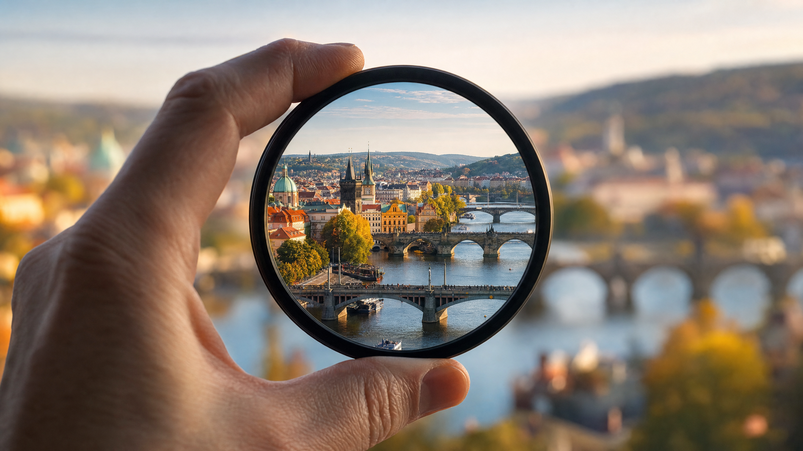

Exkluzivní zpráva odhaluje, jak vědci mění způsob, jakým vnímáme podporu zraku.

KLIKNĚTE ZDE A OBJEVTE, JAK MŮŽETE ZNOVU VIDĚT SVĚT OSTŘE!V posledních letech se vědecká komunita zaměřuje na hlubší pochopení mechanismů, které stojí za zhoršováním zraku s věkem. Nedávný průlomový výzkum, vedený týmem evropských specialistů, odhalil fascinující souvislost mezi přirozenými procesy v oku a schopností určitých přírodních látek podporovat jeho regeneraci a ochranu. Tento objev slibuje novou éru v péči o zrak, která se zaměřuje na posílení vlastních obranných mechanismů těla.
Tradiční přístupy se často soustředí na korekci symptomů, ale tento nový směr výzkumu se snaží řešit kořen problému. Vědci objevili, že klíčem k udržení ostrého a jasného zraku je podpora mikrocirkulace v oku a ochrana citlivých buněk sítnice před oxidačním stresem a záněty. Tyto faktory jsou často přehlíženy, ale hrají zásadní roli v dlouhodobém zdraví očí.
KLIKNĚTE ZDE A OBJEVTE, JAK MŮŽETE ZNOVU VIDĚT SVĚT OSTŘE!Jádrem tohoto objevu je identifikace unikátní "Zlaté Esence" – komplexu bioaktivních sloučenin získaných z vzácných rostlin, které rostou v nedotčených oblastech Evropy. Tato esence, testovaná v přísných laboratorních podmínkách, prokázala mimořádnou schopnost optimalizovat funkci oční čočky a posílit neuronové spoje zodpovědné za přenos vizuálních informací do mozku.
"Nejde o žádnou magii, ale o čistou vědu," vysvětluje Dr. Jana Nováková, vedoucí výzkumného týmu. "Pozorovali jsme, jak tato esence pomáhá buňkám oka efektivněji využívat živiny a energii, což vede k výraznému zlepšení vizuální ostrosti a komfortu. Je to, jako bychom odemkli přirozený potenciál oka pro samoopravu a ochranu."
Pokud jste unaveni z neustálého namáhání očí, rozmazaného vidění nebo obav z budoucnosti vašeho zraku, pak je tato zpráva určena právě vám. Představte si, že se probudíte a vidíte svět s neuvěřitelnou jasností, že můžete číst knihy, sledovat televizi nebo řídit auto bez jakýchkoli omezení. Tato svoboda je nyní na dosah.
Klikněte na tlačítko níže a získejte okamžitý přístup k exkluzivnímu videu, které podrobně odhaluje, jak "Zlatá Esence" funguje a jak ji můžete začlenit do svého života pro podporu vašeho zrakového zdraví. Neodkládejte to, vaše oči si zaslouží tu nejlepší péči!
OBJEVTE TAJEMSTVÍ OSTŘEJŠÍHO ZRAKU DNES!